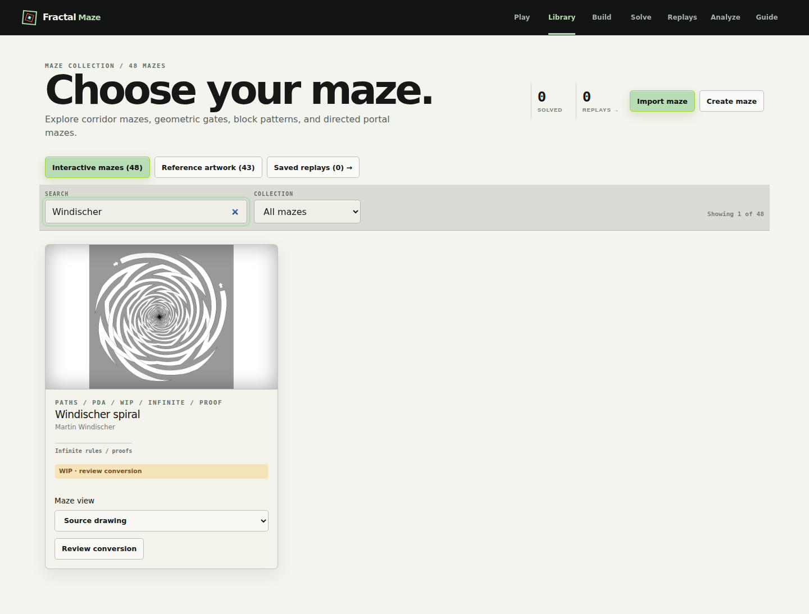
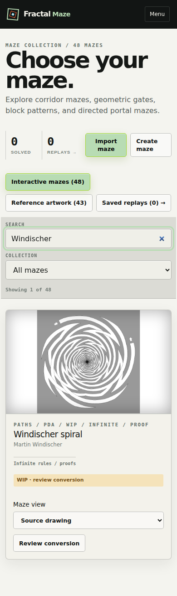
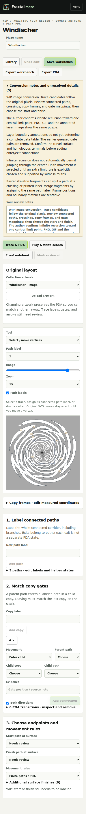
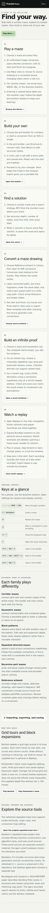

Unfinished source conversion flows
Windischer: conversion review from Library

Windischer: phone Library review action

Windischer: incomplete Play URL opens its WIP workspace

Guide: current player flows and primary research links
